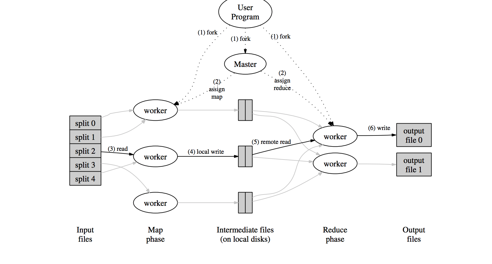

MapReduce 是一种编程范式, 是由函数式编程模型中的
map和reduce演化而来的.
MapReduce: 使用Map函数将key/value转化成中间结果的key/value, reduce函数合并所有的中间结果并且与相关的key关联.
函数式的程序可以自动的并且并行的运行在大规模集群上面. 实时运行的整个系统关注于输入数据, 调度任务执行, 处理错误, 管理内部所必须的网络通信等.
Map: 输入pair, kefxiy/value. 输出中间表示intermediate key/value
Reduce: 输入中间表示intermediate key/value, 输出对应的结果. 输入通常是迭代器, 因为内存中无法存放海量的数据.
常见例子:
map: 对每个单词生成一对(key, 1) reduce: 将每一对(key, 1)合并起来Grep: map: 执行grep, reduce: 仅仅将每一项map的结果进行复制web 链接图: map:输入<source, target>输出每一个<target, source>. reduce: 输出<target, list(source)>map:输出<word, document ID>, reduce函数将所有<word, document ID>聚合成<word, list(document ID)>这样就可跟踪单词在全文中的位置
MapReduce库在用户程序中首先分割input files为M块, 每块为典型的16MB~64MB(通过可选项确定), 然后启动许多forked的程序在集群机器上.forked的程序其中有一个比较特殊为Master程序. 其余程序为Worker程序.Master程序向Worker分配任务. Master会选择空闲的Worker提交一个map任务或者Reduce任务Map任务的的Worker会读取input files的内容, 到intermediate key/value并且存在内存中key/value会被定期的写入本地磁盘中, 并且被partitioning function划分到不同的区域. 这些在本地磁盘中的pair的位置会传回到Master,以便后续的Reduece函数使用.Reduce Worker获取Master通知的之前intermediate key/value在磁盘中的位置时. Reduce Worker将会通过远程过程调用读取数据. 读取结束之后, 将会根据intermediate keys对数据进行排序. 这样以便所有的keys聚集到一起. 如果数据太大无法放进内存, 则使用外部排序.Reduce Worker对于每一个不同的intermediate key进行计算, 即将key和intermediate values传入Reduce Function. Reduce Funciton的结果将会被添加到最终的结果文件中.Map和Reduce的任务完成之后, Master将会唤醒用户进程. MapReduce的调用返回.Master数据结构Master 保持着许多数据结构. 对于每个Map和Reduce的任务, 会保留其的状态(空闲, 在进行中, 完成), 和其ID.
Master是从Map task到intermediate file到Reduce task的通道.
由于MapReduce是被设计去处理大规模的数据, 运行在大规模分布式集群上面. 所以MapReduce需要保持高的容错
Worker FailureMaster会定期的ping每个Worker, 如果没有在规定的时间内回应, Master将会把该Worker标记为failed. 所有的map task被Woker完成, Master将会把Worker的状态标记为空闲(idle), 这样该Worker可以重新被调度.
map task在失败的情况下, 需要去重新执行, 因为输出保存在本地磁盘(私有临时文件), 不是全局共享的, 是该机器独有的.
reduce task在失败的情况下, 可以不必去重新执行, 输出保存在GFS(global file system)中, 失败之后, 可以重新调度任务, 去执行, 不必在失败的机器上面继续执行.
map task可以重复执行, 只有其中的一个task会被告知给Reduce Worker, 其余的都会被认为失败了.
reduce task如果重复执行了, 多个重复的任务都会写在GFS上面!
Master FailureMaster会定期的向Master的数据结构中写checkpoints, 如果Master挂了, 则会根据上次的checkpoints重新fork一个Master.
Master Locality文件定位网络带宽在计算环境中是一种比较稀缺的资源. 通过用GFS来管理存储在本地的input data来节省网络带宽资源的消耗. GFS将每一个文件切分成大小为64MB的块, 并且存储三份备份在不同的机器上. Master获取input files存储的具体位置信息, 并且在包含相关input files的副本的机器上面执行map task. 当map task失败之后, 则将会在在同一个网络中的另一个replica上面重新执行map task. 这样在执行一次大规模的MapReduce操作时, 大部分input file的读操作都是在本地进行, 没有网路带宽资源的消耗.
Task Granularity任务粒度 将map分割为M块, 将reduce分割为R块. 理想情况下M+R>N, N为Worker的数量. 每个Worker执行许多不同的任务可以提高动态负载均衡, 并且可以加速出错恢复.
Master有O(M+R)种调度, 这样必须在内存中存储O(M*R)种状态. 通常M的数量为将input file分割为16MB-64MB块的数量, R的数量为期望使用的Worker数量的2~5倍.
mapreduce 分析Master存储了所有Master需要保存的信息:
sync.Mutex: 对于有共享的数据结构进行并发控制, 即为workers[] 实现线程安全sync.Cond: 使用了典型的生产者消费者模型, 当有新的worker被注册到master中去时, sync.Cond会调用boardcast去唤醒所有等待该条件变量的goroutine.channel, 通常可以用来进行线程同步.Master.Register注册函数. 使用互斥量作为并发控制, 将注册的worker添加到workers[]中. 通过条件变量, 唤醒forwardRegistrations, 即告知有新的worker添加.
Master.forwardRegistrations注册信息转寄函数, 典型的互斥量与信号量配合使用的方法, 当对信号量进行操作时, (唤醒和等待时, 释放当前的线程的锁, 然后切换线程). 该函数获取master中最新添加的worker, 并将该worker添加到一个特定的channel中(非阻塞), schedule函数通过channel读取worker的相关信息, 并消费.
该函数是一个helper function, helper function是其他函数计算的一部分, 或者说与其他函数的计算流程有关, 通常用来提高程序的可读性. 通过函数的命名可以看出所做事情和与其他函数的关联.
Master.run该函数在给定一定数量的mapper和reducer上面执行mapreduce任务.
mapper, 将input files切分为若干部分.worker上面调度任务.mapper任务结束, 就开始执行reducer的任务.task都结束时, reducer的结果将会被聚合该函数, 接收一个schuedule func(phase jobPhase) 类型的调度函数, 用来实际执行特定的mapper或者reducer的任务.
该函数, 接收一个finish func()类型的函数, 用来处理调度完成之后的事项.
Worker存储了所有与Worker相关的一些状态信息
sync.Mutex: 对于共享的数据进行并发控制保证安全性.Worker.DoTask该函数由Master调用, 当有一个新的task被scheduled时.
mutex锁机制, 将worker的concurrent变量+1.Map或Reduce操作mutex锁机制, 将worker的concurrent变量-1.Worker.register该函数告诉Master当前Worker存在并且可以调用. 该函数内部调用了RPC, 服务.
Worker.RunWorker该函数设置Worker与Master的连接, 并且将该Worker的地址还有其他信息注册到Master中, 等待task的调度.
Map/Reduce input and output主要编写两个函数, doMap和doReduce.
doMap函数该函数用来管理一个map任务: 读取input files中的一个文件, 对于读取的内容执行用户定义的mapF, 并且将这个内容切分成nReduce个中间文件.
doReduce该函数用来管理一个reduce任务: 读取中间文件, key/value pairs. 先对于中间文件中的key/value进行排序, 然后再调用用户定义的reduceF, 将结果输出到磁盘上.
Single-worker word count主要编写mapF和reduceF, 具体可以参考mapreduce的paper实现.
实现一个并行worker线程的MapReduce通过rpc来进行通信. 注意对于worker的调度的方法, 可以通过实现线程安全的队列来实现, 即使用经典的Mutex/Cond模型. 或者使用Golang Channel来实现调度.
实现master处理failed worker的功能. 由于worker没有持久的状态, 如果一个worker失败了, 则master将会通过RPC重新将失败的任务赋给其他的worker.
worker失败最主要有如下两种状态:
worker已经执行了任务,但是reply丢失worker正在执行任务, 但是rpc超时.简单的来说就是实现一个错误重试机制.
通过编写Map和Reduce函数, 来实现构造一个倒排索引. 倒排索引被广泛的运用在文档搜索上面.
主要编写两个函数:
mapFunction: 将文档中的每个单词构造 <word, document ID>的kv对.reduceFunction: 接收所有构造的<word, document ID>的kv对, 并根据document ID进行排序,构造<word, list(document ID)>的对. lab1 花了挺多时间, 熟悉学习了golang的代码设计, 以及rpc相关知识, 不得不说MapReduce论文的思想确实十分伟大. lab1的实现简单但是需要思考很多问题, 收货颇丰!